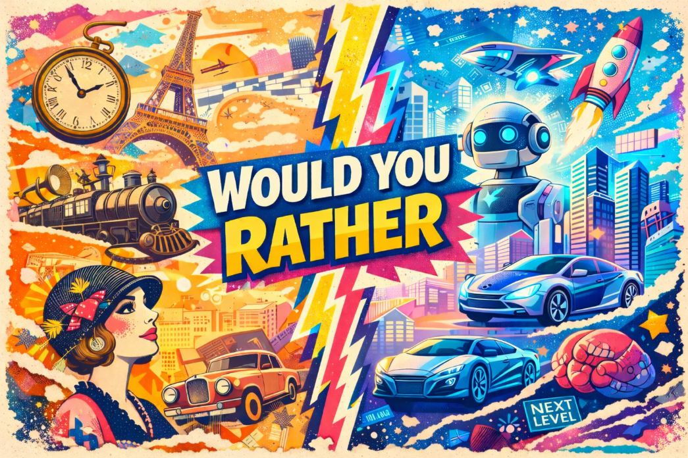

🎉
All Done!
You've gone through all 50 questions.
Question
Would You Rather…

Welcome to the ultimate game of choices. Every round gives you two insane options, and you must pick one.
Lock in your answer and explain your reasoning. Drop in anytime and see where the chaos takes you!
You've gone through all 50 questions.
This will return all 50 questions to the deck and erase every question marked as used for the active session. This cannot be undone.